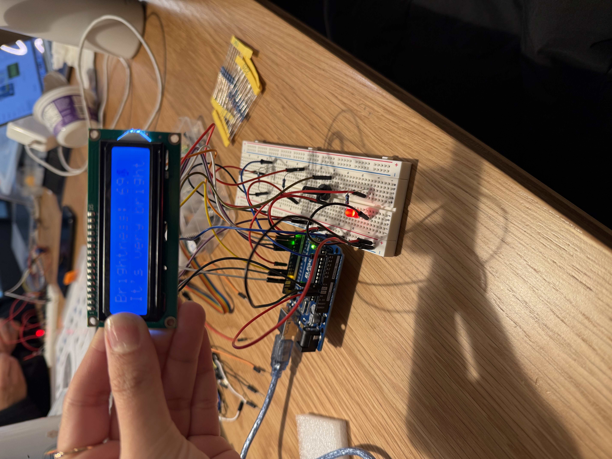

Red LED needed a minimum of 160 Ohm. The resistors used for red LED are 220 Ohm. The exact resistance needed was 160 Ohm, and the closest to that was 220 Ohm.
int brightness = map(constrain(sensorValue, 13107, 58590), 13107, 58590, 1023, 0);
/*
LiquidCrystal Library
The circuit:
* LCD RS pin to digital pin 12
* LCD Enable pin to digital pin 11
* LCD D4 pin to digital pin 5
* LCD D5 pin to digital pin 4
* LCD D6 pin to digital pin 3
* LCD D7 pin to digital pin 2
* LCD R/W pin to ground
* LCD VSS pin to ground
* LCD VDD pin to 5V
* 10K resistor:
* ends to +5V and ground
* wiper to LCD VO pin (pin 3)
*/
// include the library code:
#include
// initialize the library by associating any needed LCD interface pin
// with the arduino pin number it is connected to
const int rs = 12, en = 11, d4 = 5, d5 = 4, d6 = 3, d7 = 2;
LiquidCrystal lcd(rs, en, d4, d5, d6, d7);
const int sensorPin = A5;
const int ledPin = 9;
void setup() {
// set up the LCD's number of columns and rows:
lcd.begin(16, 2);
// set up the Serial monitor
Serial.begin(9600);
// Print a starting message on the LCD
lcd.print("Game Of Light");
// Wait 5 seconds
delay(5000);
// Clear text on LCD
lcd.clear();
// Set up pin for LED
pinMode(ledPin, OUTPUT);
}
void loop() {
// Clear text LCD each time loop runs
lcd.clear();
// Read value from the sensor - photoresistor
int sensorValue = analogRead(sensorPin);
// Map the photoresistor's realistically measured value (200-900) to range (0-255)
// Constrain the value of the photoresistor to always be between 200 and 900 due to the limits of reality.
int brightness = map(constrain(sensorValue, 200, 900), 200, 900, 255, 0);
// Link the brightness to the LED
analogWrite(ledPin, brightness);
// Position where to start printing on the LCD (row 0, column 0)
lcd.setCursor(0,0);
// Print informaiton on LCD
lcd.print("Brightness: ");
lcd.print(sensorValue);
// Adjust LCD and serial monitor message based on light levels
if (brightness < 85) {
lcd.setCursor(0, 1);
lcd.print("It's very bright!");
Serial.println("High light detected, brightness reduced.");
} else if (brightness >= 85 && brightness < 170) {
lcd.setCursor(0, 1);
lcd.print("Nice and cozy :)");
Serial.println("Moderate light detected.");
} else {
lcd.setCursor(0, 1);
lcd.print("It's really dark!");
Serial.println("Low light detected, brightness increased.");
}
// Print the sensor and mapped values to the Serial Monitor
Serial.print("Sensor Value: ");
Serial.print(sensorValue);
Serial.print(" | Mapped Brightness: ");
Serial.println(brightness);
// Add a small delay to stabilize readings
delay(200);
}